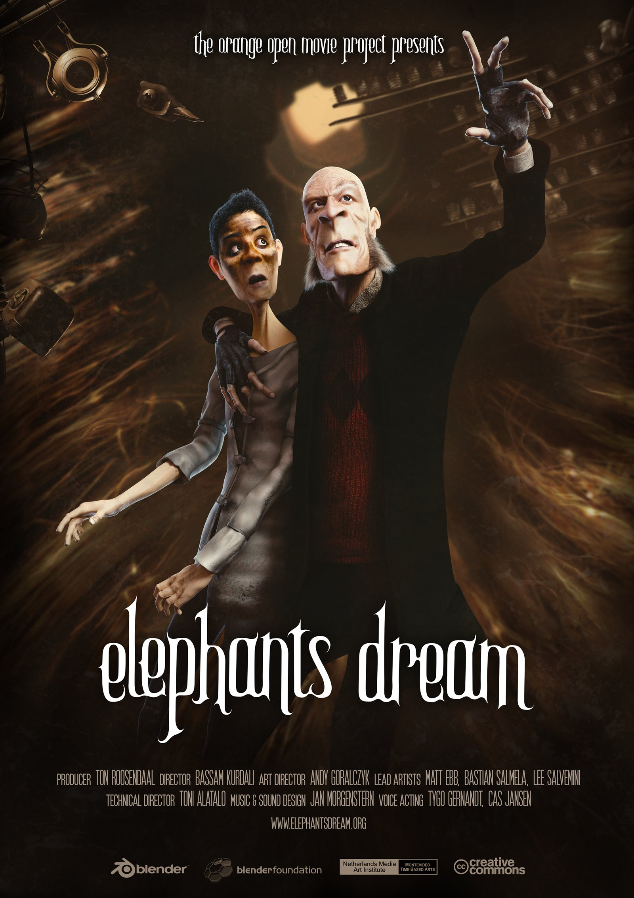
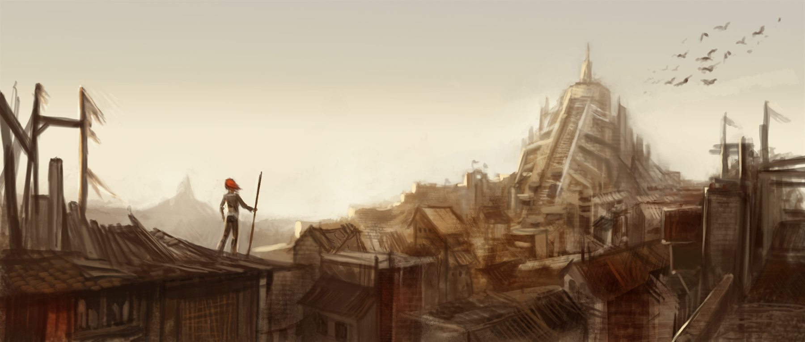
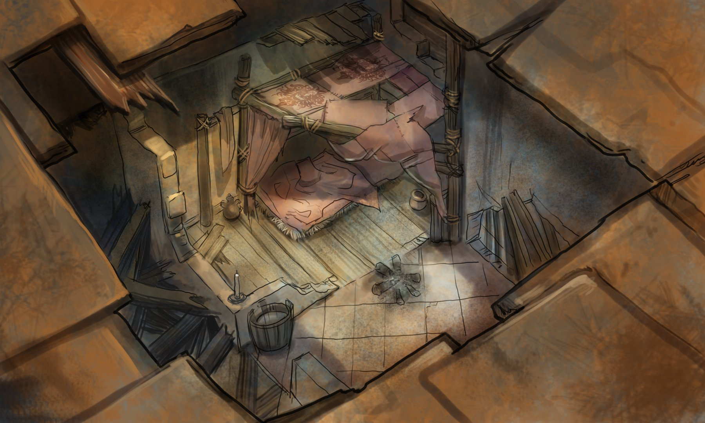

Character & Form
An exploration of shape, color and character in vector illustration.
Creative projects / Digital studio
Illustrative examples selected for the portfolio assignment; not coursework I completed.
Choose a project to explore the collection.
01 — 05Visual examples for presentation; not coursework completed in the class.
These credited online references illustrate Graphic Animation I concepts permitted by the project brief; they are not my own work.
An exploration of shape, color and character in vector illustration.

A poster study of bold typography and contrast.
Frames, repetition and movement in 2D animation.
A minimal logo system and visual brand identity.
A visual exploration of shape, rhythm and motion.
Credited visual references
This section reviews online visual examples permitted by the project brief. These images are not my own; each card identifies its creator, source and license.

Character design · Model sheet
A model sheet helps keep a character consistent across different views. It is a useful example for studying color, silhouette and defining features.
Artist: David Revoy / Blender Foundation
Source: Wikimedia Commons
License: CC BY 3.0
Resized and re-encoded for the web; not cropped.

2D animation · Scene frame
This frame shows how character placement and the background work together to establish a scene’s atmosphere.
Creator: Morevna Project
Source: Wikimedia Commons
License: CC BY 3.0
Re-encoded for the web; not cropped.

Graphic design · Film poster
The poster’s visual hierarchy, color choices and vertical composition provide an example of promotional design for an animated film.
Design: Bassam Kurdali, Andy Goralczyk and the Blender Foundation
Source: Wikimedia Commons
License: CC BY 4.0
Resized and re-encoded for the web; not cropped.

Environment design · Concept art
Broad color areas and perspective establish the atmosphere of this animated world in a single frame. I looked at how environment design can support a story’s mood.
Artist: David Revoy / Blender Foundation
Source: Wikimedia Commons
License: CC BY 3.0
Resized and re-encoded for the web; not cropped.

Interior · Light and atmosphere
The use of light and color gives this interior a quiet, slightly mysterious mood. It is an example of how an environment drawing can help create a feeling.
Artist: David Revoy / Blender Foundation
Source: Wikimedia Commons
License: CC BY 3.0
Resized and re-encoded for the web; not cropped.
These are online reference examples, not works created by Kevser Çetkin. Creator and license details are listed with each source.